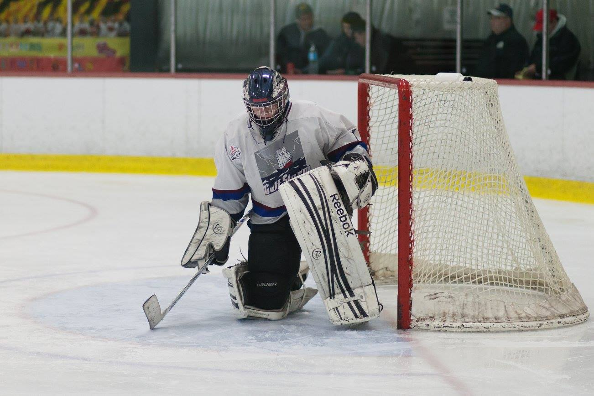

About Me
 Hi, I'm Danny.
Hi, I'm Danny.
- I'm a Software Engineering student at UNB University of New Brunswick
- I am also completing a Diploma in Technology Management & EntrepreneurshipUNB TME Program alongside my degree.
- I grew up on a potato farmMy family owns and operates a sixth generation potato and grain farm. Read more about it here in Prince Edward Island, Canada.
Stuff I Find Cool
- Embedded systems
- Robotics
- Renewable energy
- Competitive Super Smash Bros
- Rooms with AC
Stuff I'm Involved With
- UNB Dev Society
- Video Game Tournaments
- Hockey
- Ultimate Frisbee
This past school year, I helped found the UNB Dev Society; A new society with the mission to make UNB students more marketable in the field of technology.
I attend and organize tournaments for Super Smash Bros. Melee. The most recent tournament I organized was Waveland 3; a two-day event attracting over 120 attendees from Atlantic Canada.
"You don't have to be crazy to be a goalie; but it sure helps."
Here's a picture of me in net!
Projects
Portfolio
Created the web page you are currently on!
Technologies used
- HTML
- CSS
- JavaScript
- jQuery